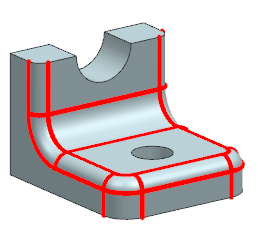

Smooth Edges visualization enhancement
What is it?
You can now use the following Smooth Edges Visualization preferences for the Shaded with Edges rendering style:
-
Color
-
Font
-
Width
You can also control the Angle Tolerance value. NX determines whether an edge is smooth based on the Angle Tolerance value.

In the previous releases, you could use these preferences only for the Static Wireframe rendering style.
Why should I use it?
You can use these Visualization preferences during modeling tasks to quickly differentiate between smooth and sharp edges.
|
Example |
If you are creating blends on multiple edges, you can differentiate immediately between the blended edges, and the edges that you still need to work on. |
Where do I find it?
|
Toolbar |
Visualization→Visualization Preferences |
|
Menu |
Preferences→Visualization |
|
Location in dialog box |
Visual tab→Edge Display Settings group→Part Settings (Selected Views) subgroup |